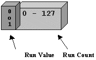
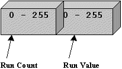

La compressione riduce le dimensioni di un blocco di informazioni e serve per conservare più infomazioni nello stesso spazio. Un compressore è un algoritmo che compatta i dati originali, mentre un decompressore li ricostruisce noto l'algoritmo di compressione. I più comuni compressori sono:
La dimensione fisica di una stringa formata da più caratteri uguali - detta run - viene ridotta in due byte, di cui il primo rappresenta il numero di caratteri e il secondo il carattere. Un run può contenere fino a 128 o 256 caratteri. Ad esempio la stringa AAAAAAbbbXXXXXt codificata risulta 6A3b5X1t. Si hanno 3 livelli di codifica: a bit, a byte e a pixel. Il livello a bit codifica run di bit uguali e sono efficienti solo per immagini monocromatiche a 1 bit. Il livello byte codifica run di byte uguali in packet di due byte. L'algoritmo a livello di pixel si applica quando un pixel occupa più di un byte. Si utilizza un byte di run count e N byte, corrispondenti alla dimensione del pixel in byte, per il run value.
|

Packet RLE a livello di bit |

Packet RLE a livello di byte |
Packet RLE a livello di pixel